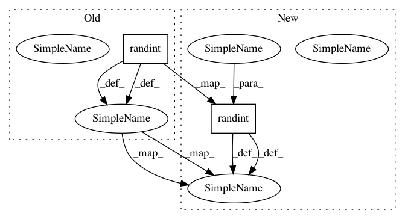

cf65784f7297dca491436112b9a5689ecd7533ec,acgan/acgan.py,ACGAN,train,#ACGAN#,121
Before Change
valid = np.ones((batch_size, 1))
// Generator wants discriminator to label the generated images as the intended
// digits
sampled_labels = np.random.randint(0, 10, batch_size).reshape(-1, 1)
// Train the generator
g_loss = self.combined.train_on_batch([noise, sampled_labels], [valid, sampled_labels])
// Plot the progress
print ("%d [D loss: %f, acc.: %.2f%%, op_acc: %.2f%%] [G loss: %f]" % (epoch, d_loss[0], 100*d_loss[3], 100*d_loss[4], g_loss[0]))
After Change
// The labels of the digits that the generator tries to create an
// image representation of
sampled_labels = np.random.randint(0, 10, (batch_size, 1))
// Generate a half batch of new images
gen_imgs = self.generator.predict([noise, sampled_labels])
// Image labels. 0-9 if image is valid or 10 if it is generated (fake)
img_labels = y_train[idx]
fake_labels = 10 * np.ones(img_labels.shape)
// Train the discriminator
d_loss_real = self.discriminator.train_on_batch(imgs, [valid, img_labels])
d_loss_fake = self.discriminator.train_on_batch(gen_imgs, [fake, fake_labels])
d_loss = 0.5 * np.add(d_loss_real, d_loss_fake)
// ---------------------
// Train Generator
// ---------------------
// Train the generator
g_loss = self.combined.train_on_batch([noise, sampled_labels], [valid, sampled_labels])
// Plot the progress
print ("%d [D loss: %f, acc.: %.2f%%, op_acc: %.2f%%] [G loss: %f]" % (epoch, d_loss[0], 100*d_loss[3], 100*d_loss[4], g_loss[0]))
In pattern: SUPERPATTERN
Frequency: 3
Non-data size: 2
Instances
Project Name: eriklindernoren/Keras-GAN
Commit Name: cf65784f7297dca491436112b9a5689ecd7533ec
Time: 2018-05-15
Author: eriklindernoren@live.se
File Name: acgan/acgan.py
Class Name: ACGAN
Method Name: train
Project Name: jwyang/faster-rcnn.pytorch
Commit Name: 31c83a7fab611d2282e85f28d0e32e1a30d04c79
Time: 2017-09-06
Author: jlu347@jill.cc.gatech.edu
File Name: lib/roi_data_layer/roibatchLoader.py
Class Name: roibatchLoader
Method Name: __getitem__